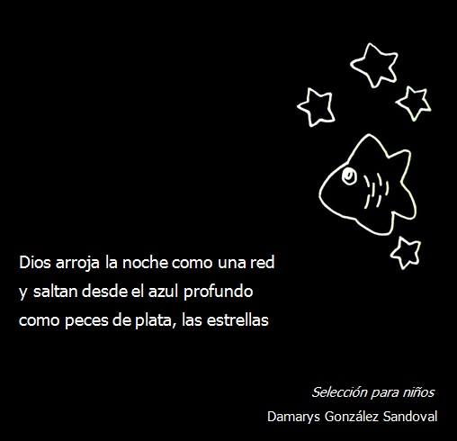
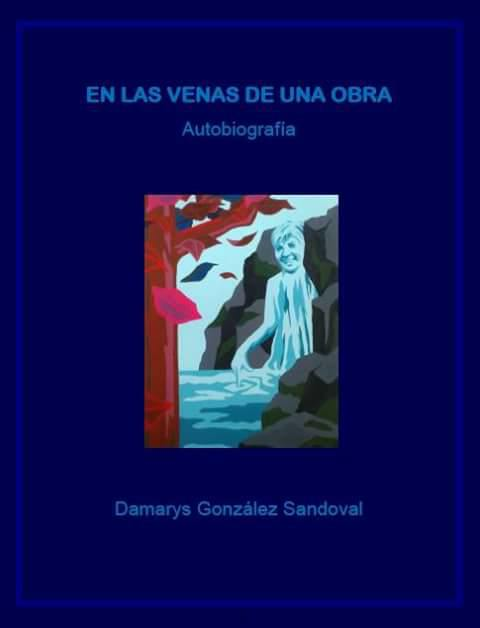

Damarys González Sandoval
Poeta y Artista Plástica
Inicio
Pinturas
Poemarios
Videos
Colaboraciones
Título: Eucaliptos, del libro Confidentes del Paisaje
Leer más
Una hoja del helecho se marchita, del Libro Figura Traslúcida
Leer más
Título: A un jóven invidente del Libro Entre el limo y el reflejo, cuerpos de agua
Leer más

Del Libro de selección para niños
Leer más
Del Libro Mariposas en el suelo
Del Libro Retratos
Leer más
Del Libro Sentidos
Leer más

En las venas de una obra, Autobiografía
Leer más